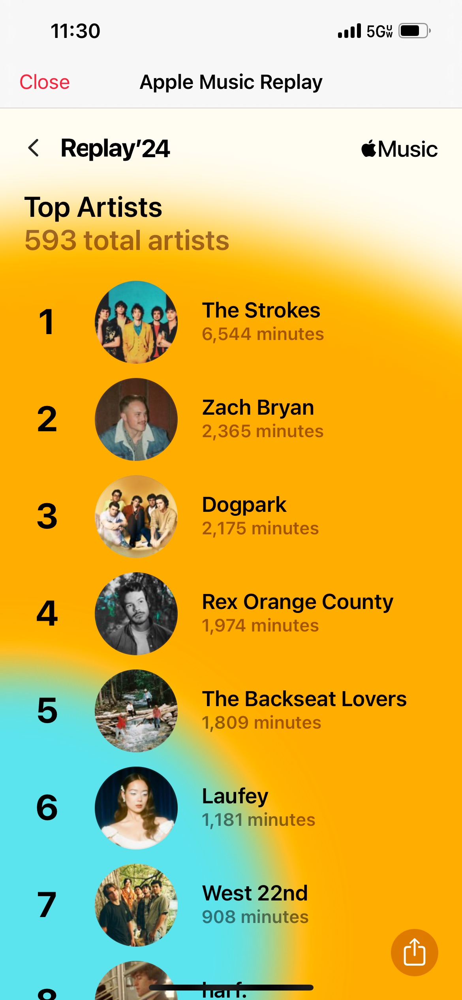
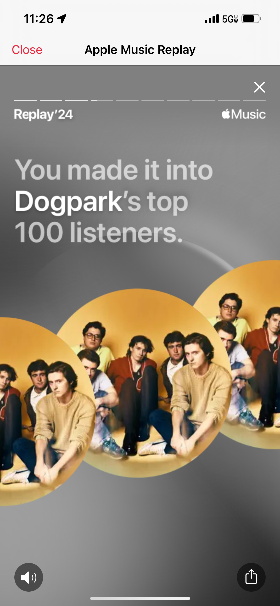
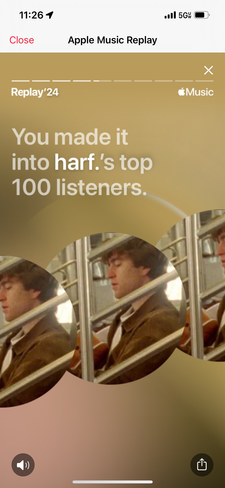
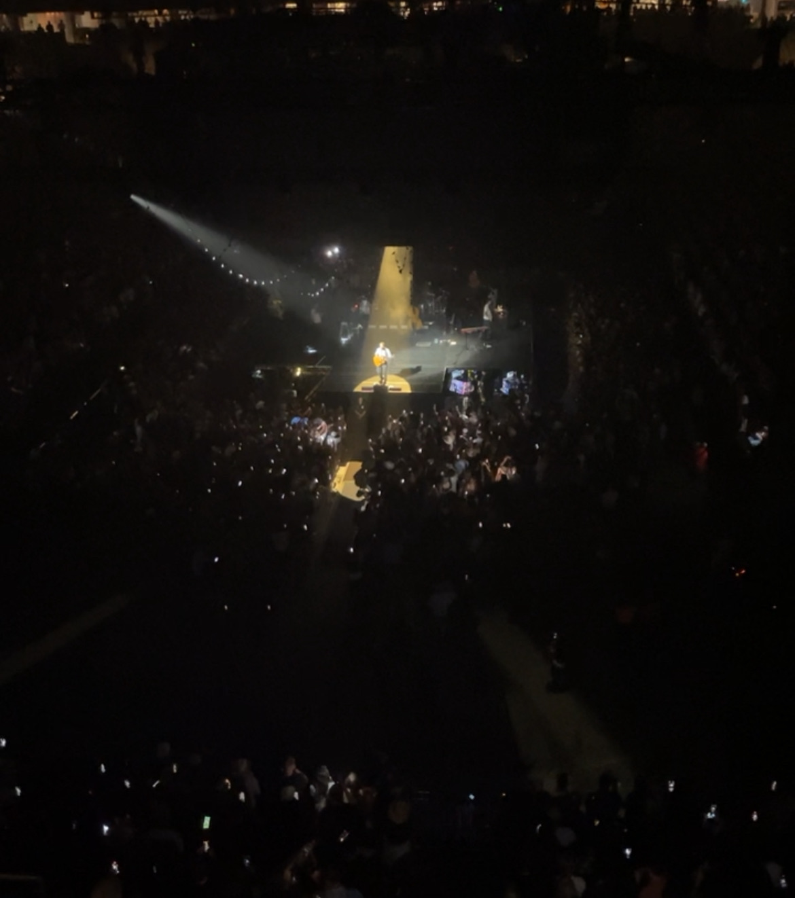
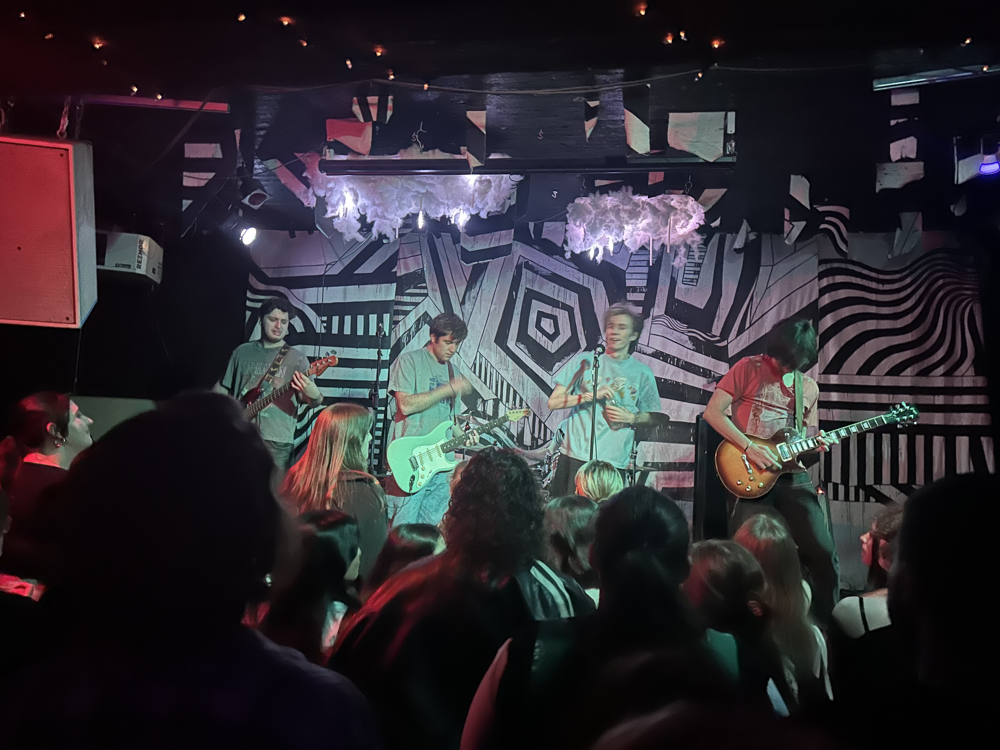

I enjoy all kinds of music, so here are some of my Apple Music stats from 2024
Here is my list of my top artists listened to in 2024 and the stats.



This past year I made it on the top 100 of two of my favorite artists.


I went to a couple concerts this year — Zach Bryan in Minneapolis and dogpark in Milwaukee.